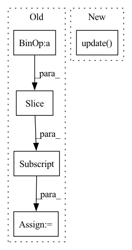

Pattern ID :7810
Before Change
sequence, actions, _, _, _ = self.real_env.envs[0].sample_buffer()
index = int(torch.randint(len(sequence) - self.config.stacking, (1,)))
initial_frames = sequence[index:index + self.config.stacking]
initial_actions = actions[index:index + self.config.stacking]
self.simulated_env.env_method("restart", initial_frames, initial_actions, indices=i)
losses = self.agent.learn(After Change
score_training=False,
logger=self.logger
)
postfix.update( losses)
if eval_period > 0 and i % eval_period == 0:
eval_scores = self.evaluate_agent()
postfix.update({"eval_score": np.mean(eval_scores), "eval_score_std": np.std(eval_scores)})In pattern: SUPERPATTERN
Frequency: 3
Non-data size: 5
Instances Fragment ID: 27920762
Project Name: thomas-schillaci/simple
Commit Name: e178ec3721f240bc74a4ef308787060c6c1b64bc
Time: 2020-12-22
Author: thomas.schillaci@gmail.com
File Name: simple/__main__.py
M Class Name: SimPLe
N Class Name: SimPLe
M Method Name: train_agent_sim_env(3)
N Method Name: train_agent_sim_env(2)
M Parent Class:
N Parent Class:
M File Name: simple/__main__.py
N File Name: simple/__main__.py
M Start Line: 70
M End Line: 87
N Start Line: 74
N End Line: 109
Before Change
with tqdm(total=len(train_loader),
desc="Train Epoch //{}".format(epoch + 1),
disable=not verbose) as t:
for batch_idx , (data, target) in enumerate(train_loader):
adjust_learning_rate(epoch, batch_idx)
if args.cuda:
data, target = data.cuda(), target.cuda()
optimizer.zero_grad()
// Split data into sub-batches of size batch_size
for i in range(0, len(data), args.batch_size):
data_batch = data[i:i + args.batch_size]
target_batch = target[i:i + args.batch_size]
output = model(data_batch)
train_accuracy.update(accuracy(output, target_batch))
loss = F.cross_entropy(output, target_batch)After Change
loss = F.cross_entropy(output, target)
train_loss.update(loss)
train_accuracy.update( accuracy(output, target))
loss.backward()
// Gradient is applied across all ranks
if use_kfac: Fragment ID: 27920763
Project Name: gpauloski/kfac_pytorch
Commit Name: 9afedfd17a78f485b4e75637ad3d59b90627938f
Time: 2020-03-05
Author: gpauloski@yahoo.com
File Name: examples/pytorch_imagenet_resnet50.py
M Class Name: AnonimousClass
N Class Name: AnonimousClass
M Method Name: train(1)
N Method Name: train(1)
M Parent Class:
N Parent Class:
M File Name: examples/pytorch_imagenet_resnet50.py
N File Name: examples/pytorch_imagenet_resnet50.py
M Start Line: 208
M End Line: 235
N Start Line: 193
N End Line: 219
Before Change
with trange(n * z, desc="Training agent in simulated env") as t:
for _ in t:
for i in range(self.config.agents):
if i == self.config.agents - 1:
initial_frames, initial_actions = self.real_env.envs[0].get_first_small_rollout()
else:
sequence, actions, _, _, _ = self.real_env.envs[0].sample_buffer()
index = int(torch.randint(len(sequence) - self.config.stacking, (1,)))
initial_frames = sequence[index:index + self.config.stacking]
initial_actions = actions[index:index + self.config.stacking]
self.simulated_env.env_method("restart", initial_frames, initial_actions, indices=i)
losses = self.agent.learn(After Change
score_training=False,
logger=self.logger
)
postfix.update( losses)
if eval_period > 0 and i % eval_period == 0:
eval_scores = self.evaluate_agent()
postfix.update({"eval_score": np.mean(eval_scores), "eval_score_std": np.std(eval_scores)}) Fragment ID: 27920761
Project Name: thomas-schillaci/simple
Commit Name: e178ec3721f240bc74a4ef308787060c6c1b64bc
Time: 2020-12-22
Author: thomas.schillaci@gmail.com
File Name: simple/__main__.py
M Class Name: SimPLe
N Class Name: SimPLe
M Method Name: train_agent_sim_env(3)
N Method Name: train_agent_sim_env(2)
M Parent Class:
N Parent Class:
M File Name: simple/__main__.py
N File Name: simple/__main__.py
M Start Line: 70
M End Line: 87
N Start Line: 74
N End Line: 109